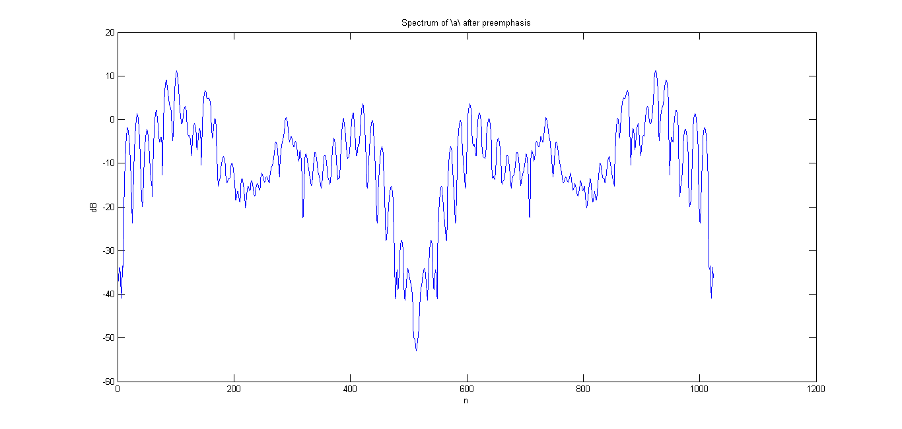

Lwin = 0.03 * 8000;
w = hamming(Lwin);
sound_a = wavread('a.wav');
spect_a = abs(fft(sound_a(1:Lwin).*w, 1024));
figure(1)
plot(20*log10(spect_a));
title('Spectrum of \a\ before preemphasis')
xlabel('n')
ylabel('dB')
sound_i = wavread('i.wav');
spect_i = abs(fft(sound_i(1:Lwin).*w, 1024));
figure(2)
plot(20*log10(spect_i));
title('Spectrum of \i\ before preemphasis')
xlabel('n')
ylabel('dB')
sound_n = wavread('n.wav');
spect_n = abs(fft(sound_n(1:Lwin).*w, 1024));
figure(3)
plot(20*log10(spect_n));
title('Spectrum of \n\ before preemphasis')
xlabel('n')
ylabel('dB')
sound_s = wavread('s.wav');
spect_s = abs(fft(sound_s(1:Lwin).*w, 1024));
figure(4)
plot(20*log10(spect_s));
title('Spectrum of \s\ before preemphasis')
xlabel('n')
ylabel('dB')
pre_em_sound_a = zeros(length(sound_a),1);
pre_em_sound_a(1) = sound_a(1);
pre_em_sound_a(2:end) = sound_a(2:end) - 0.975*sound_a(1:end-1);
pre_em_spect_a = abs(fft(pre_em_sound_a(1:Lwin).*w, 1024));
figure(5)
plot(20*log10(pre_em_spect_a));
title('Spectrum of \a\ after preemphasis')
xlabel('n')
ylabel('dB')
pre_em_sound_i = zeros(length(sound_i),1);
pre_em_sound_i(1) = sound_i(1);
pre_em_sound_i(2:end) = sound_i(2:end) - 0.975*sound_i(1:end-1);
pre_em_spect_i = abs(fft(pre_em_sound_i(1:Lwin).*w, 1024));
figure(6)
plot(20*log10(pre_em_spect_i));
title('Spectrum of \i\ after preemphasis')
xlabel('n')
ylabel('dB')
pre_em_sound_n = zeros(length(sound_n),1);
pre_em_sound_n(1) = sound_n(1);
pre_em_sound_n(2:end) = sound_n(2:end) - 0.975*sound_n(1:end-1);
pre_em_spect_n = abs(fft(pre_em_sound_n(1:Lwin).*w, 1024));
figure(7)
plot(20*log10(pre_em_spect_n));
title('Spectrum of \n\ after preemphasis')
xlabel('n')
ylabel('dB')
pre_em_sound_s = zeros(length(sound_s),1);
pre_em_sound_s(1) = sound_s(1);
pre_em_sound_s(2:end) = sound_s(2:end) - 0.975*sound_s(1:end-1);
pre_em_spect_s = abs(fft(pre_em_sound_s(1:Lwin).*w, 1024));
figure(8)
plot(20*log10(pre_em_spect_s));
title('Spectrum of \s\ after preemphasis')
xlabel('n')
ylabel('dB')
Warning: Unable to interpret TeX string "Spectrum of \a\ before preemphasis"
Warning: Unable to interpret TeX string "Spectrum of \i\ before preemphasis"
Warning: Unable to interpret TeX string "Spectrum of \n\ before preemphasis"
Warning: Unable to interpret TeX string "Spectrum of \s\ before preemphasis"
Warning: Unable to interpret TeX string "Spectrum of \a\ after preemphasis"
Warning: Unable to interpret TeX string "Spectrum of \i\ after preemphasis"
Warning: Unable to interpret TeX string "Spectrum of \n\ after preemphasis"
Warning: Unable to interpret TeX string "Spectrum of \s\ after preemphasis"
